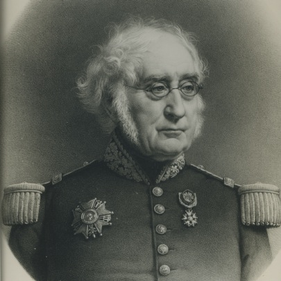
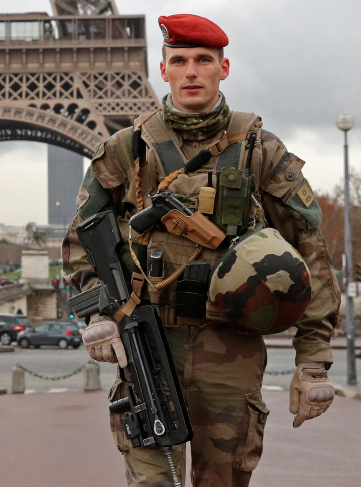
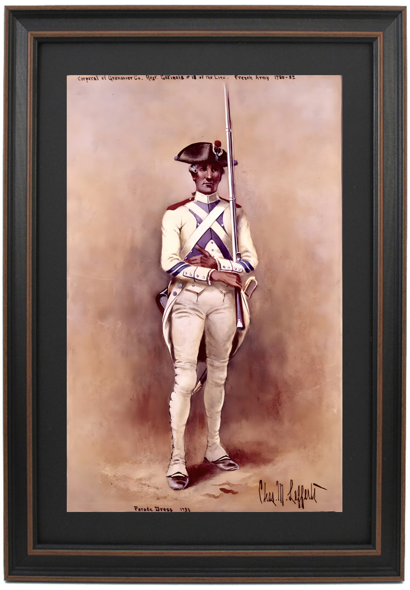
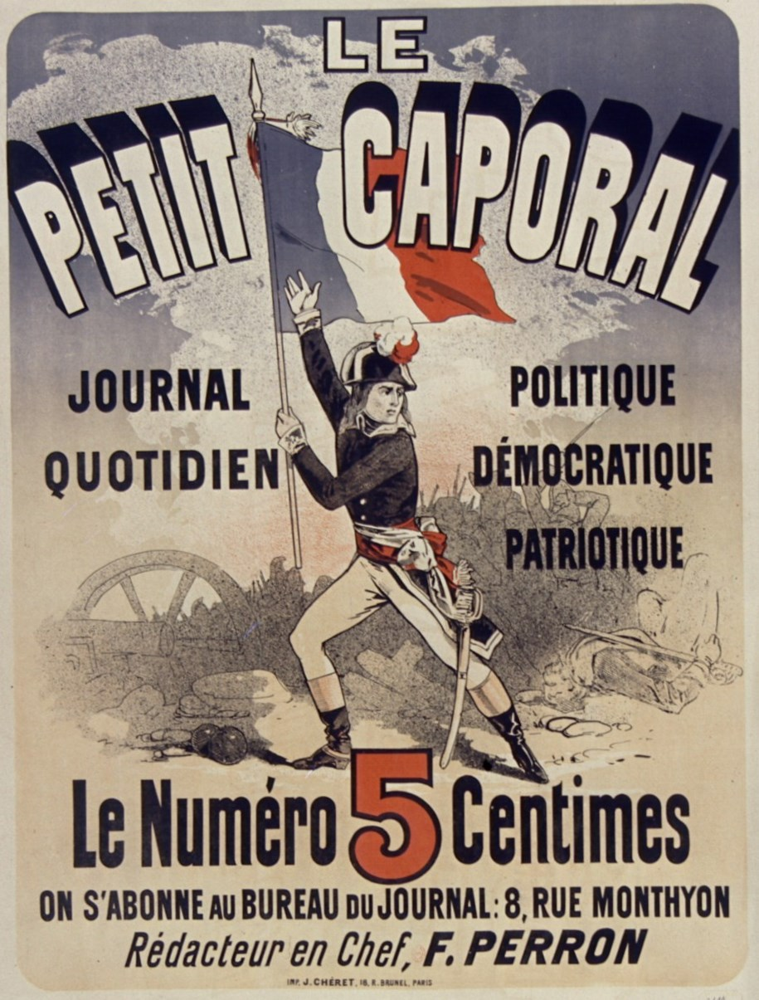
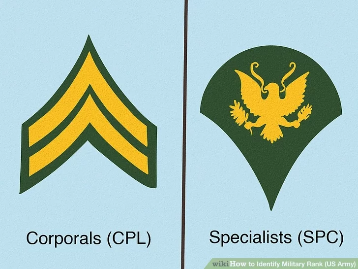
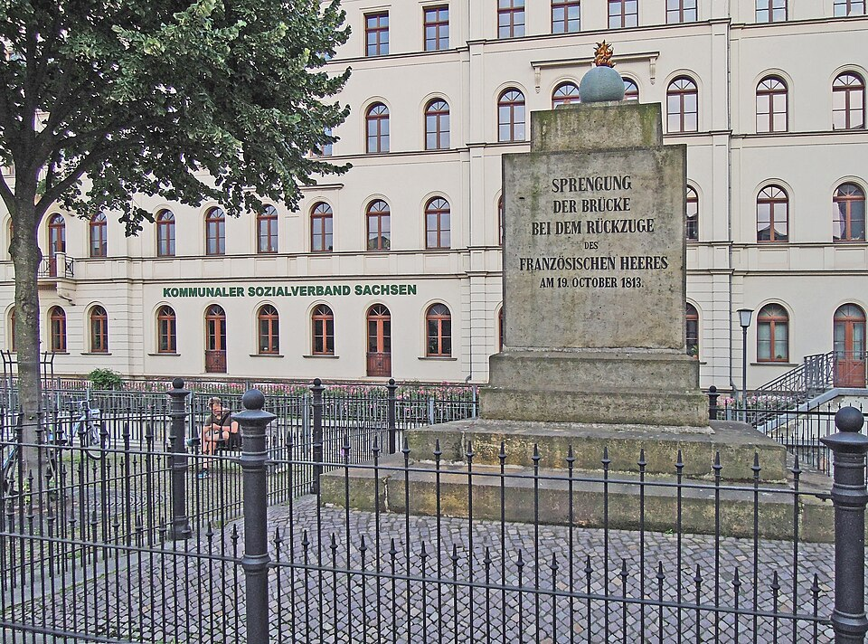

라이프치히 전투 (42) - 대령과 상병
게시: 2026-04-13T06:30:01+09:00
지난 번에 언급한 대로, 라이프치히 서쪽 엘스터강에 놓인 다리, 즉 엘스터교(Elsterbrücke)를 폭파하는 임무는 그랑다르메 수석 공병대의 수석 참모 몽포르(Joseph Monfort) 대령에게 떨어졌습니다. 그는 10월 19일 아침부터 미리 엘스터교에 폭약을 설치하고 다리 동쪽편에서 기다리고 있었습니다만, 오후가 되면서 본격적인 후퇴가 시작되자 상황은 곧장 혼란으로 빠져들었습니다. 라이프치히 시내에서는 요란한 총성과 함께 고함소리, 비명소리가 끊이지 않았고, 철수하는 아군은 이미 부대 단위의 통제가 무너진 채로 무질서하게 좁은 다리를 통과하고 있었습니다. 이런 식이면 아직 아군이 다 빠져나오기 전에 언제라도 적군이 불쑥 나타날 수 있었습니다. 그럴 경우 어떻게 해야 하는지에 대해 몽포르 대령은 상세한 지시를 받은 바가 없었기에, 무척 불안해졌습니다. 원래 그는 마지막 아군 부대가 질서정연하게 다리를 건너고나면, 막도날이든 누구든 고위 장성이 자신에게 '이제 폭파하게'라고 명령할 줄 알았는데, 눈 앞의 상황을 보니 아무리 긍정적으로 생각해도 그럴 것 같지가 않았던 것입니다.

(다시 한번 보는 몽포르 대령의 얼굴입니다. 전에도 언급했지만, 몽포르 대령은 이 사건으로 인해 아래에 언급될 라퐁텐 상병과 함께 군사재판에 회부되었으나, 도중에 흐지부지 기소가 중단되었습니다.)
당장 적군이 나타난다면 몽포르 대령 자신이 다리 폭파 여부를 결정해야 했습니다. 하지만 그는 일개 공병장교에 불과하여 전체적인 전황 판단을 할 역량과 권한이 부족했습니다. 가령 아직 다리를 건너지 못하고 시내에 남아있는 아군이 절반 이상인 상황에서 적군이 나타나도 교량을 폭파해야 할까요? 그건 아니겠지요. 남아있는 아군이 5% 미만이라면? 당연히 과감하게 폭약 심지에 불을 붙여야겠지요. 하지만 만약 남아있는 아군이 20% 수준이라면 어떻겠습니까? 좀 망설여지겠지요? 문제는 남아있는 아군이 10%인지 30%인지 파악할 방법이 몽포르 대령에게는 없었다는 점입니다. 아무도 그에게 상황을 보고하지 않았고, 시내 상황을 파악해서 보고하라고 보낼 부하 장교도 없었습니다. 부하 장교들이 있었다고 해도, 란슈테트 성문을 가득 메우며 후퇴하는 병사들의 물결을 거슬러 시내로 들어갈 방법도 없어 보였습니다. 여러분이라면 이 상황에서 어떻게 하시겠습니까? 제일 쉬운 것은 모르면 물어보는 것입니다. 그래서 몽포르 대령은 엘스터교 폭파에 대한 구체적인 지시를 받기 위해 자신에게 내려온 명령서를 발부한 장본인인 베르티에 참모장을 만나 물어보기로 하고는 베르티에가 있는 린더나우로 향했습니다. 하지만 이건 절대 좋은 생각이 아니었습니다. 린더나우에서 베르티에를 찾을 수 있다는 보장도 없었지만, 찾아서 구체적인 지시를 들었다고 해도 문제였습니다. 몰려나오는 병사들을 헤치고 란슈테트 성문을 통해 라이프치히 시내로 다시 진입하는 것이 사실상 불가능했던 것처럼, 좁은 둑방길을 따라 후퇴하는 병사들을 거슬러 린더나우에서 라이프치히로 되돌아온다는 계획은 실현 가능성이 매우 낮았습니다. 몽포르 대령은 그렇게 길을 떠나며 교량 폭파 임무의 중책을 하급자에게 맡겼습니다. 그런데 당시 그랑다르메의 조직은 과거와는 달리 엉망이었는지, 그의 휘하에는 대위는 고사하고 소위 나부랭이조차 없었으며, 심지어 중사나 하사조차 없었습니다. 그날 아침에 엘스터교에 폭약을 설치한 그의 팀에는 몽포르를 제외하면 총 4명이 있었는데, 그 중 최상급자는 상병(caporal)에 불과했습니다. 그 상병의 이름은 그냥 라퐁텐(Lafontaine)이라고만 전해집니다. 몽포르 대령이 린더나우로 떠나버린 이유는 자신에게는 감당이 안 될 정도로 너무 중대한 결정권이 주어졌기 때문이었습니다. 그런데 대령에게도 감당이 안 되는 결정이 상병에게는 얼마나 엄청난 중압감을 주었겠습니까? 그런 중책을 부여받은 라퐁텐 상병은 아마 멘붕에 빠졌을 것입니다.

(상병이라는 계급은 우리나라에서는 사병 계급입니다만, 영국이나 미국 등 일부 국가에서는 부사관 중 가장 낮은 계급이기도 합니다. 영어(corporal)이나 프랑스어(caporal)이나 모두 이탈리아어 capo corporale에서 유래된 계급명인데 capo는 머리 또는 보스, corporale은 육체 또는 몸이라는 뜻입니다. 즉 직접 병사들을 이끄는 계급이라는 것이지요. 특이하게도 프랑스군에서는 상병이 원래는 부사관이었으나 1818년 이후에는 부사관이 아닌 사병 계급으로 격하되었습니다. 그러니까 1813년 라퐁텐 상병은 일반 사병이 아니라 부사관 계급으로서, 리더였던 것이지요. 이 사진은 2015년 1월의 샤를리 엡도(Charlie Hebdo) 잡지의 풍자 만화에서 비롯된 파리 테러 사건 떄문에 파리에 배치된 프랑스 공수부대 상병의 모습입니다. 오른쪽 팔에 갈매기 막대 2개짜리의 계급장이 절반 가량 보입니다.)

(이건 미국독립전쟁에 참전한 프랑스 가티네(Gatinais) 연대의 어느 상병의 모습입니다. 소매 하단에 사선으로 그어진 두 줄의 파란 선(Galons)이 그의 계급을 나타냅니다.)

(저 불운한 라퐁텐 상병이 아마 역사상 가장 유명한 상병이 아닐까 합니다만, 프랑스에서 상병하면 'le petit caporal' (작은 상병)로 알려진 나폴레옹이 떠오릅니다. 저 별명 때문에 나폴레옹이 키가 작다는 오해가 널리 퍼졌는데, 저 petit라는 말은 꼭 키가 작다는 뜻은 아니고 친근함을 나타내는 표현이라고 합니다. 이 그림은 보불전쟁 이후 나폴레옹 3세의 제2 제정이 무너진 뒤인 1876년, 공화정을 반대하고 여전히 보나파르트주의를 내세우는 우파들이 만든 신문인 'Le Petit Caporal'의 광고 포스터입니다. 1부에 5상팀이라네요. 처음 3천5백부로 시작했다가 5~6년 뒤에는 1만6천부까지 팔리는 중견 신문사가 되었습니다. 하지만 시대착오적인 그 본질 때문에 20세기 둘어서면서 점점 구독자가 줄어서, 결국 1923년에 폐간됩니다.)

(미육군에서는 상병이 맨 바닥에서 4번째 계급(E-4)인데, 의외로 두 가지로 나뉩니다. Specialist (SPC) 계급과 Corporal (CPL) 계급인데, 계급장도 다르게 생겼고 Specialist는 사병, Corporal은 부사관으로 인정됩니다. 보통 진짜 부사관의 시작이라고 하는 Sergeant (SGT, E-5)가 되려면 SPC가 아니라 CPL이 되어야 하느냐 하면 그건 또 아니고 그냥 SPC에서 SGT로 곧장 진급하는 경우도 많습니다.) 그렇게 황당한 처지에 놓인 라퐁텐 상병이 초조하게 애를 태우며 몽포르 대령이 돌아오기를 기다리던 중, 지난 편에 언급한 자켄 휘하의 러시아 유격병 부대 하나가 엘스터강을 건너와 엘스터교 후방으로 이어지는 둑방길 위의 그랑다르메 병사들의 후퇴 행렬에 머스켓 사격을 가하기 시작했습니다. 이들은 기껏해야 중대 단위의 백여 명에 불과했고, 슾지를 사이에 두고 약 백여 미터 정도 떨어진 곳에서 훼방을 놓는 것에 불과했습니다. 몽포르가 라퐁텐 상병에게 남긴 명령은 '적에게 다리가 점령되기 전에 폭파하라'는 것뿐이었습니다. 라퐁텐 상병도 처음에는 상황을 파악하려 두리번거렸으나, 측면에 나타난 일단의 적군이 사격을 퍼붓는데도 아군은 모두 나몰라라 후퇴만 계속할 뿐 그 누구도 그 측면의 적군에 조직적으로 반격하지 않았습니다. 바짝 쫄아있던 라퐁텐과 그의 부하 3명은 다리가 적에게 넘어갈 위기에 처했다고 판단하고는 아직 많은 병사들이 건너고 있는 엘스터교에 장치한 폭약의 도화선에 불을 붙였습니다.
라퐁텐 상병이 배짱이 좋은 편은 아닐지 몰라도 폭약 장착 솜씨는 좋았는지, 이 폭파는 엘스터교를 산산조각 냈고, 그 폭발음은 라이프치히 전체에 울려퍼졌습니다. 엘스터교 위에 있던 병사들은 아마 무슨 일이 벌어지는지 눈치 채지 못했을 것이고 고통도 없었을 것입니다. 딱하게 된 것은 엘스터교를 바로 눈 앞에 두고 있던 병사들이었습니다. 눈 앞의 폭발 충격에 내동댕이쳐진 그들 위로, 방금 전까지 다리 위에 있던 병사들과 말들의 팔다리와 내장 등이 연기를 뿜는 돌덩어리와 두꺼운 판재 등과 함께 쏟아져 내렸습니다.

(이 비극이 벌어졌던 곳에 세워진 추모비 Brückensprengungsdenkmal 입니다. 이름이 거창하고 긴데, 그냥 다리 폭파 추모비라는 뜻의 독일어 단어 조합입니다. 저 사건이 있은지 50년 뒤인 1863년에 조성된 것인데, 만들 때의 조건이 '프랑스인들의 감정을 자극할 문구는 새기지 않는다'는 것이었다고 합니다. 저 추모비에 새겨진 문구는 정말 건조하게, '1813년 10월 19일 프랑스군의 후퇴 과정에서 발생한 다리 폭파'라고만 되어 있습니다. 도화선에 불 붙은 폭발탄의 모습의 조형물이 꼭대기에 있는 것이 인상적입니다.)
그런 끔찍한 광경과는 무관하게, 등 뒤의 라이프치히 시내에서는 다급한 그랑다르메 병사들의 탈출이 이어졌습니다. 이들에겐 방금 전의 그 커다란 폭음과 충격파가 무엇이었는지 궁금해할 여유가 없었고, 이미 끊어진 다리에 발을 동동 구르며 강변에 몰린 병사들의 등을 떠밀었습니다. 등이 떠밀린 병사들 중 일부는 망설이지 않고 총과 탄약포낭 등의 장구를 버리고 강물로 뛰어 들어 헤엄을 쳤습니다. 그들 중 일부는 건너편에 도착했지만, 많은 수가 익사했습니다. 바로 이틀전에 내린 비로 인해 엘스터강의 물이 거세게 불어났기 때문이었습니다. 다리가 끊어졌고 유일한 퇴로가 사라졌다는 소식이 결국 저 뒤쪽까지 전달되자, 일부 병사들은 절망하여 항복을 택했고, 일부는 그래도 살기 위해 다른 퇴로를 찾아 북쪽으로 방향을 틀었습니다. 라이프치히의 북서쪽은 플라이서강과 엘스터강, 기타 여러 시냇물들이 얽힌 습지대였고, 따라서 적군의 포위가 느슨했기 때문이었습니다. 그렇게 북쪽으로 향한 병사들 중에는 최후까지 궂은 후위 임무를 맡았던 제8군단, 즉 폴란드 병사들도 있었고, 군단장 포니아토프스키도 포함되어 있었습니다.

(라이프치히에서의 나폴레옹과 포니아토프스키입니다. 그는 바로 하루전인 10월 18일에 나폴레옹으로부터 원수봉을 받고 원수로 승진했었습니다. 나폴레옹은 그렇게 나무 막대기 하나를 던져주고 그 대가로 큰 희생이 따르는 후위 임무를 폴란드군에게 떠넘긴 것입니다.) Source : The Life of Napoleon Bonaparte, by William Milligan Sloane Napoleon and the Struggle for Germany, by Leggiere, Michael V With Napoleon's Guns by Colonel Jean-Nicolas-Auguste Noël https://www.britannica.com/event/Napoleonic-Wars/Dispositions-for-the-autumn-campaign http://www.historyofwar.org/articles/campaign_leipzig.html https://warhistory.org/@msw/article/leipzig-battle-of-the-nations https://www.encyclopedia.com/history/encyclopedias-almanacs-transcripts-and-maps/leipzig-battle-0 https://warfarehistorynetwork.com/article/death-knell-for-napoleons-empire/ https://www.historyofwar.org/articles/battles_leipzig_19_october.html https://www.napoleon-series.org/military-info/battles/leipzig/c_leipzigoob10.html https://de.wikipedia.org/wiki/Br%C3%BCckensprengungsdenkmal https://fr.wikipedia.org/wiki/Le_Petit_Caporal https://www.patriotgearcompany.com/framed-corporal-grenadier-company-gatinais-regiment-french-army-by-charles-m-lefferts/ https://www.theguardian.com/world/2016/apr/15/paris-attacks-operation-sentinelle-soldiers-patrolling-streets-france-safer